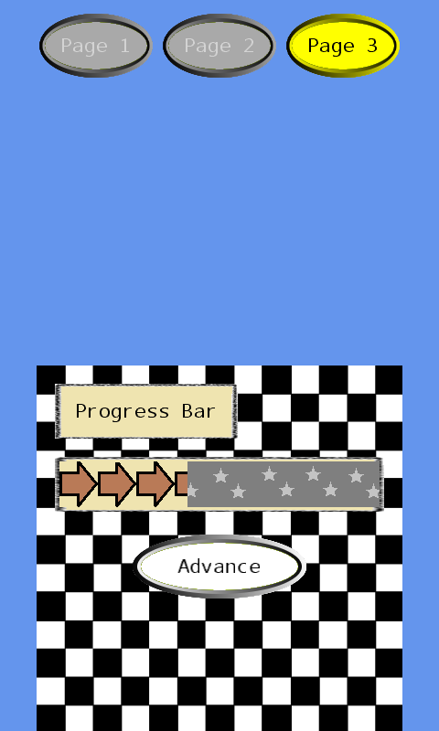

Dynamic Menu
Ported from Microsoft's XNA 4.0 Dynamic Menu sample for Windows Phone.
Source for this sample on GitHub ↗

Play ▸Opens in a new tab. Use touch input to operate the original phone controls.
About this sample
This sample demonstrates a reusable dynamic UI library. Page 1 builds controls in code; Pages 2 and 3 load their control trees from XNA content compiled from XML. The pages show buttons, labels, an image, multiline text, transitions and a progress bar.
Controls
| Action | Control |
|---|---|
| Change page | Tap Page 1, Page 2 or Page 3 at the top |
| Change hue, index or animation | Tap the controls on Page 1 |
| Advance the progress bar | Tap Advance on Page 3 |
| Exit | Gamepad Back |